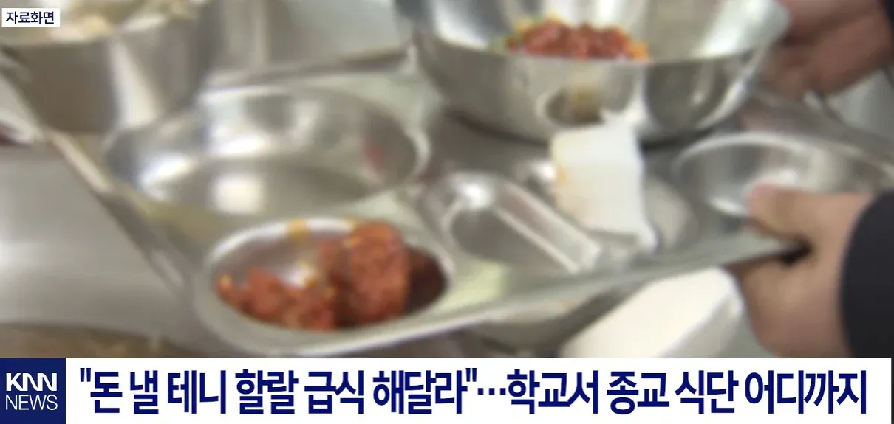
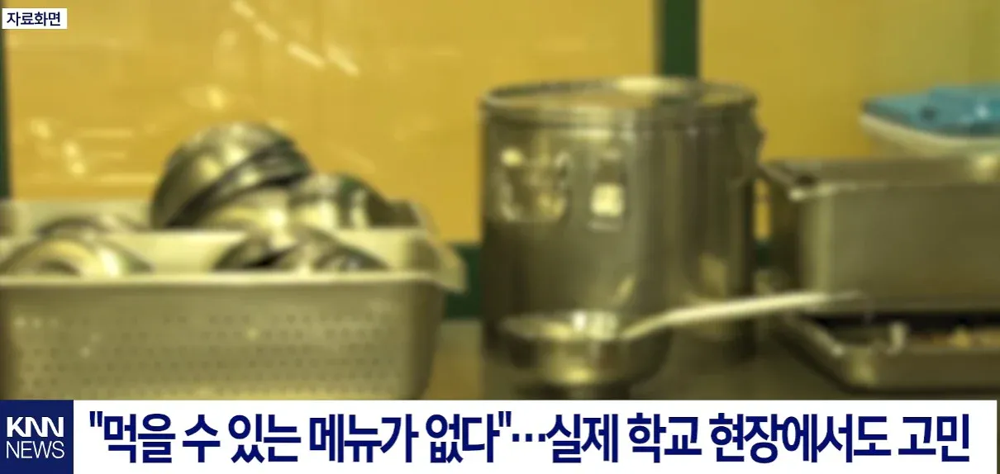

49 · 7 · 12 시간 전 · 원문


ㅗ 꺼저 그냥
수집 당시 댓글 7개
0O0O0O0O · 10 시간 전
지랄말고 꺼져
나스닥은신이야 · 10 시간 전
미개한 좆슬람새끼들
담아내기 · 9 시간 전
해줄수 있나요? 가 아니라해달라?
피떡펜 · 5 시간 전
도ㅡ시락처먹어
아졸려 · 4 시간 전
돈 안 내도 되니까 걍 주는대로 쳐먹어 좀인간으로 교화가 되어라 개슬람 새끼들아 제발
회사에서코고는중 · 3 시간 전
개슬람은 하나를 양보하면 9개를 내놓으라는 히드라 새끼들임
충주씨 · 1 시간 전
벤또는 어디다두고..
지랄말고 꺼져